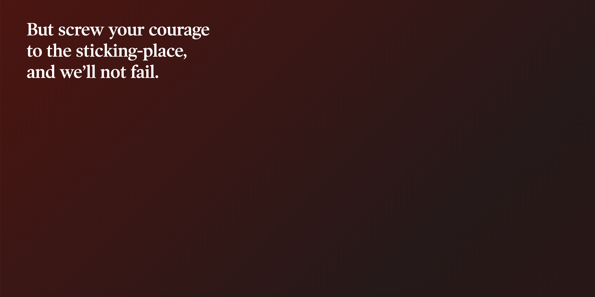
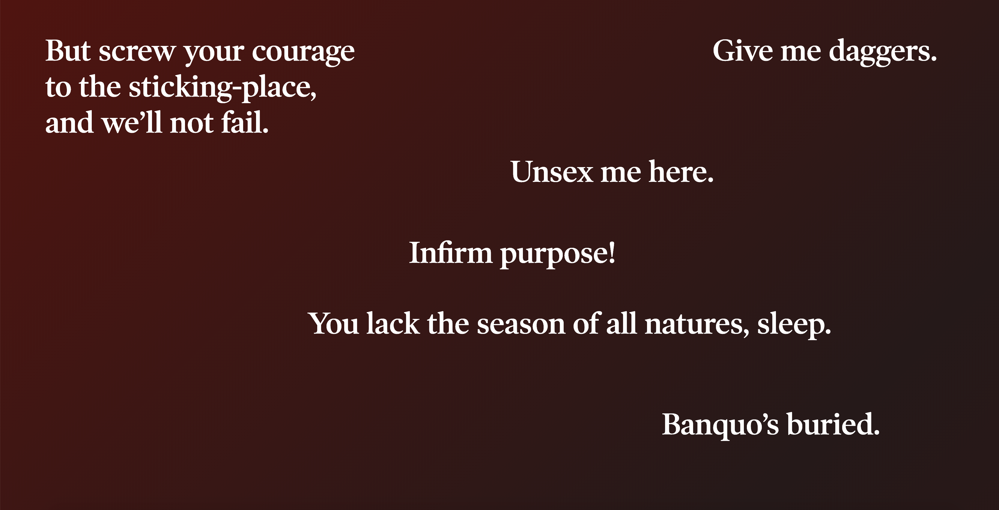
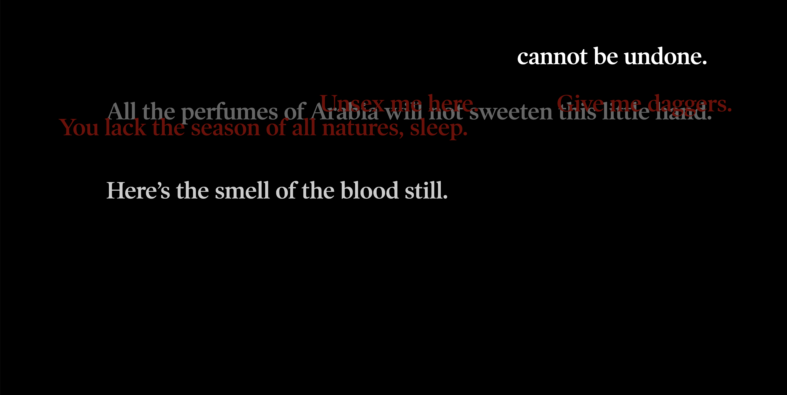

Maxim is the second project of Core Interaction Studio, a core class for communication design major at Parsons. By definition, maxims are a short, pithy statement expressing a general truth or rule of conduct. For this project, collect a set of phrases from an existing source. We collect a set of content and examin with questions, such as "What are they about and where are they coming from? How does the content change based on the hierarchy of your design and the way you’re breaking it up?" Then, we create a webpage in response to the prompt.
  Maddie used animated visualizations and text to tell the story of the play "Macbeth" by William Shakespeare. The animated background creates a tension that is slowly developed in the play. The clicking of text helps to guide the audience to finish the tragic journey of the Scottish King, Macbeth.